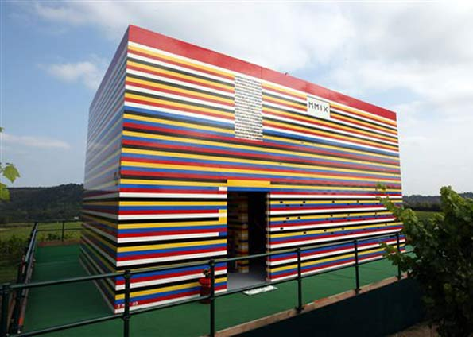

Desenvolver uma página é como construir uma casa de Lego. No começo, você fica animado, com todas aquelas peças novas e coloridas, imaginando todas as possibilidades. Mas logo percebe que construir uma casa inteira com peças de Lego não é tão fácil quanto parece.
Primeiro você precisa montar a base, mas parece que sempre está faltando alguma peça importante. Depois de procurar em todas as caixas, você finalmente a encontra, mas ao tentar encaixá-la, percebe que não é compatível com as outras peças. Aí começa a frustração.
Mas você não desiste. Continua tentando, montando, desmontando e começando tudo de novo. Às vezes, parece que está progredindo, mas quando olha de novo, percebe que a parede que acabou de construir está torta. E é nessa hora que você começa a pensar que talvez tenha escolhido a profissão errada.
Mas então, finalmente, depois de muitas tentativas e erros, a página começa a tomar forma. Você adiciona os elementos de design, ajusta as cores e finalmente chega na parte mais importante: o conteúdo.
E aí, quando você finalmente está prestes a terminar, percebe que esqueceu de algo muito importante. Um botão de compartilhar, um link quebrado, ou pior, uma foto do tamanho errado que desconfigura todo o layout. É o suficiente para fazer você querer arrancar os cabelos.
Mas no final, quando a página finalmente está pronta para ser lançada, você olha para ela com um misto de orgulho e alívio. É como olhar para uma casa de Lego recém-construída, mesmo que tenha algumas falhas aqui e ali. Afinal, ninguém é perfeito. E é isso que torna o processo de desenvolvimento de uma página tão especial: "O verdadeiro HTML são os amigos que fazemos no caminho."